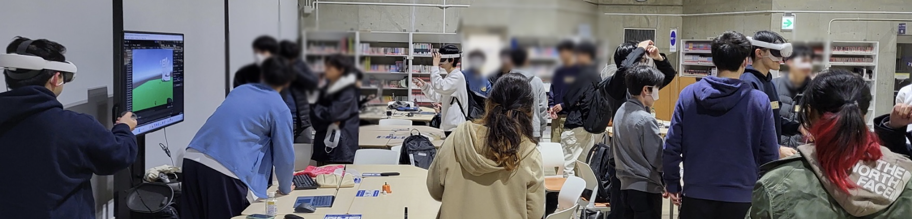

東北大学メタバース研究会は、XR技術を活用したメタバースコンテンツの企画・制作を行う学生主体のPBL型（課題解決型）サークルです。 私たちは東北大学の学生自らが企画を立案し、プロジェクトとして運営することで、実践的なスキルと創造力を高めることを目指しています。 活動では、「面白い」「楽しい」「役に立つ」と感じられる体験を大切にしながら、新たに習得した技術や知見をメンバー同士で共有・継承しています。
The Tohoku University Metaverse Kenkyūkai is a student-led, project-based circle that explores XR technologies through hands-on metaverse content creation. By planning and managing their own projects, members sharpen practical skills and creativity. We value ideas that are fun, useful, and exciting—sharing what we learn to grow together as a team.